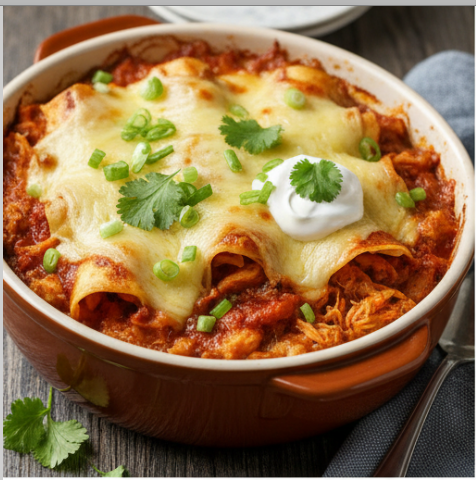

Enchilada Casserole

Description
This dish is a "lazy" version of traditional rolled enchiladas, often referred
to as a Mexican lasagna. It features layers of corn tortillas, seasoned shredded
chicken or ground beef, and plenty of gooey melted cheese. Everything is bound
together by a rich, savory red or green chili sauce and baked until the edges are
bubbly and crisp.
Ingredients
- Protein: 1 lb ground beef or shredded chicken seasoned with taco spices
- Starch: 10–12 corn tortillas cut into strips or layers
- Sauce: 2 cups red or green enchilada sauce
- Vegetables: 1 can black beans, 1 cup corn kernels, 1 small diced onion
- Dairy: 3 cups shredded Monterey Jack or Mexican blend cheese
- Garnish: Fresh cilantro, sour cream, and sliced green onions
Steps
- Preheat the oven to 375°F. Brown the ground meat in a skillet over medium
heat, draining any excess fat before stirring in the onions, beans, corn, and taco
seasoning.
- Pour a small amount of enchilada sauce into the bottom of a 9x13 baking
dish to prevent sticking, then create a base layer using corn tortilla pieces.
- Spread half of the meat mixture over the tortillas, top with more sauce,
and add a layer of cheese.
- Repeat these layers until all ingredients are used, finishing with a heavy
layer of cheese on top.
- Cover with foil and bake for 20 minutes, then remove the foil and bake for
another 10 minutes to melt the cheese completely.
- Top with fresh cilantro and sour cream.
Home